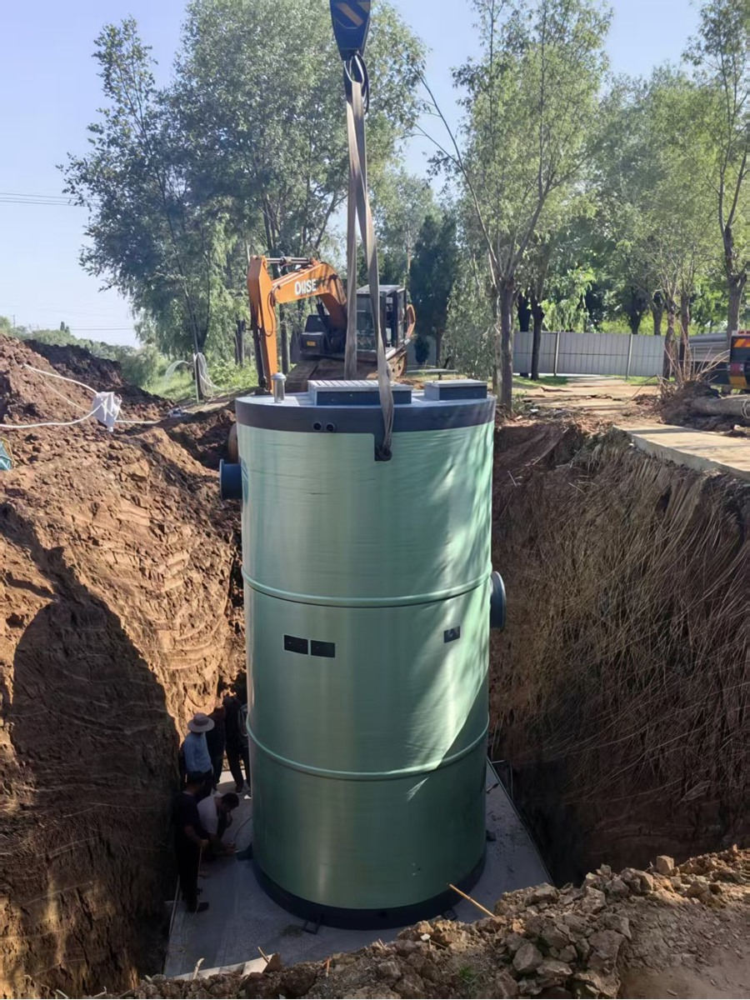
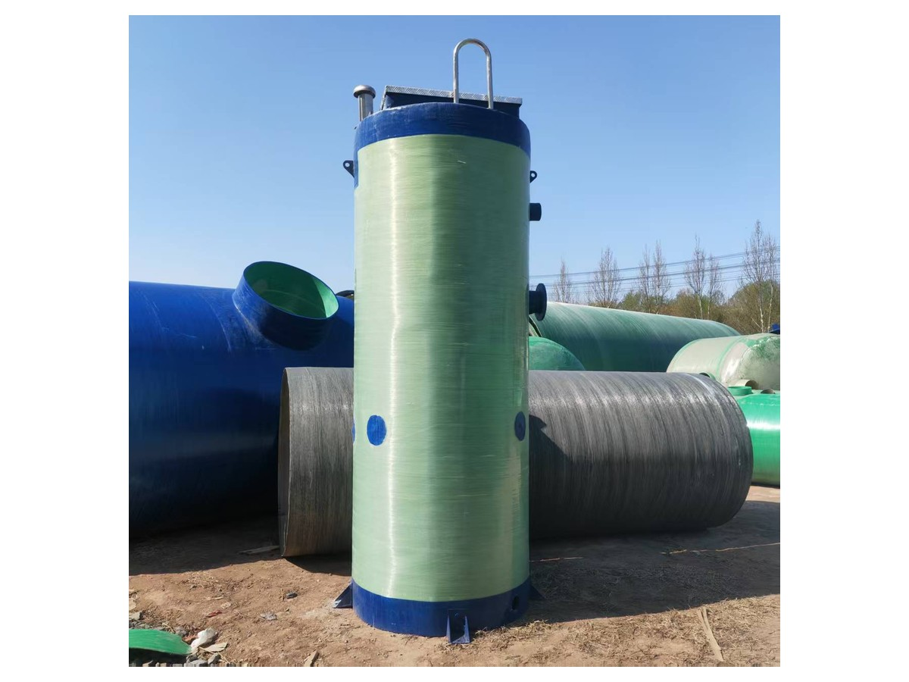

一体化筒体
筒体顶部设置检修口与通风管，侧面预留管道连接接口。

筒体顶部设置检修口与通风管，侧面预留管道连接接口。
结合筒体尺寸、基础条件、吊装通道和管道标高确定现场安装安排。
了解中新科技馆一体化泵站的内部布置、吊装安装与配套电控。
查看泵站项目 →设备外观与配置，点击图片可放大查看。


结构图用于说明组成，具体配置和尺寸以项目图纸为准。

通过结构示意查看筒体、检修口和内部设备的布置关系。
核对泵组、出水管路、阀门及现场接口。
请说明流量、扬程和安装空间，便于确定筒体尺寸、泵组及控制配置。
泵站将筒体、泵组、管路和控制设备组合，用于收集和提升污水或雨水。设计需考虑流量、扬程和进出水标高。
规模匹配 · 提标改造 · 运行稳定性
分散站点 · 低温运行 · 尾水利用
设备选型 · 泵房布置 · 图纸配合
汛期工况 · 泵组冗余 · 远程运维